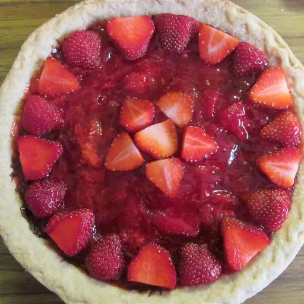

Sent by bevvie
Strawberry Pie
This strawberry pie will be the best
thing you ever taste! Even looking
at this recipe will make your mouth water!
"I love making this for my
son, this is too tasty to ignore!
- My Dad
Yield: 1 9-inch pie
Prep Time: 210 minutes
Prep Time: 210 min
| 15 minutes |
Preperation |
| 15 minutes |
Cooking |
| 3 hours |
Setting |
| Total Time: 3 hours 30 minutes |
Ingredients:
- 1 (9 inch) pie crust, baked
- 1 cup white sugar
- 3 tablespoons cornstarch
- 1 quart fresh strawberries, hulled
- 3/4 cups water
Directions:
- Arrange half of strawberries in baked pastry shell.
Place remaining strawberries in a medium saucepan.
- Add sugar to the strawberries in the saucepan;
place over medium heat and bring to a boil, stirring frequently.
- Whisk cornstarch and water together in a small bowl.
Gradually stir cornstarch mixture into boiling strawberry mixture.
Reduce heat and simmer mixture until thickened, about 10 minutes,
stirring constantly.
- Pour cooked strawberry mixture over berries in pastry shell.
Refrigerate until chilled and set, at least 3 hours.
- Have a feast!